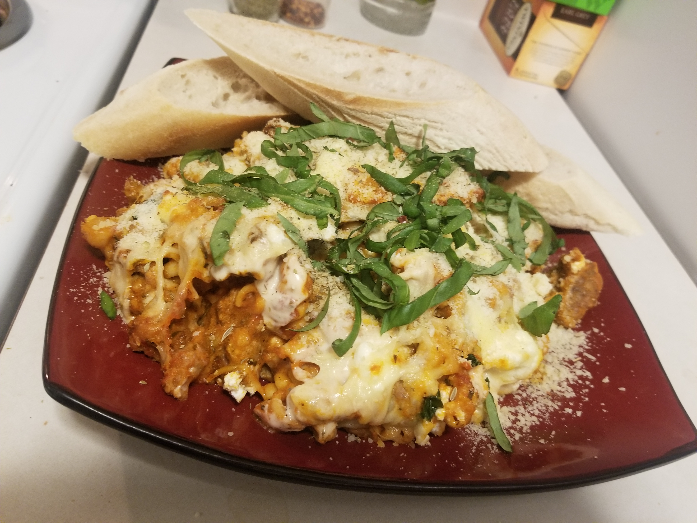

Cheesy Baked Cavatelli

Description
An Italian baked pasta dish with a combination of red and white sauce and lots of cheese! Any
kind of pasta will work, but for this recipe I will use Ziti. Also fresh basil is recommended
for extra flavor. Best served with fresh bread or breadsticks!
Ingredients
- One 16 ounce package of dried Ziti
- Two pounds of raw Italian sausage
- One jar of marinara sauce
- One jar of alfredo or bechamel sauce
- Roughly 10 ounces of ricotta cheese
- One package of shredded Italian cheese blend
- Three ounces of fresh basil(Chopped)
- Three cloves of garlic (Minced)
- Two tablespoons of your favorite Italian seasoning
Directions
- Preheat oven to 350 degrees fahrenheit
- Brown the italian sausage in a skillet and reduce heat to low until fully cooked. Drain the excess fat and set aside.
- Fill a large pot with water and add 1/4 cup of salt then bring to a boil.
- When water has boiled add the ziti and stir. Continue stirring every few minutes until the pasta is al dente.
- Drain the pasta in a colander and run under cold water to stop the cooking process. Set aside for later.
- In a large pot combine the pasta, italian sausage, garlic, red and white sauces, seasonings and stir until the sauces turn to a pinkish color.
- Add the ricotta breaking it up into marble sized pieces and top with the shredded cheese.
- Put into the preheated oven and bake for 10-15 minutes until cheese has browned.
- Serve topped with basil, grated parmesan cheese, bread, or all three!
Back Home